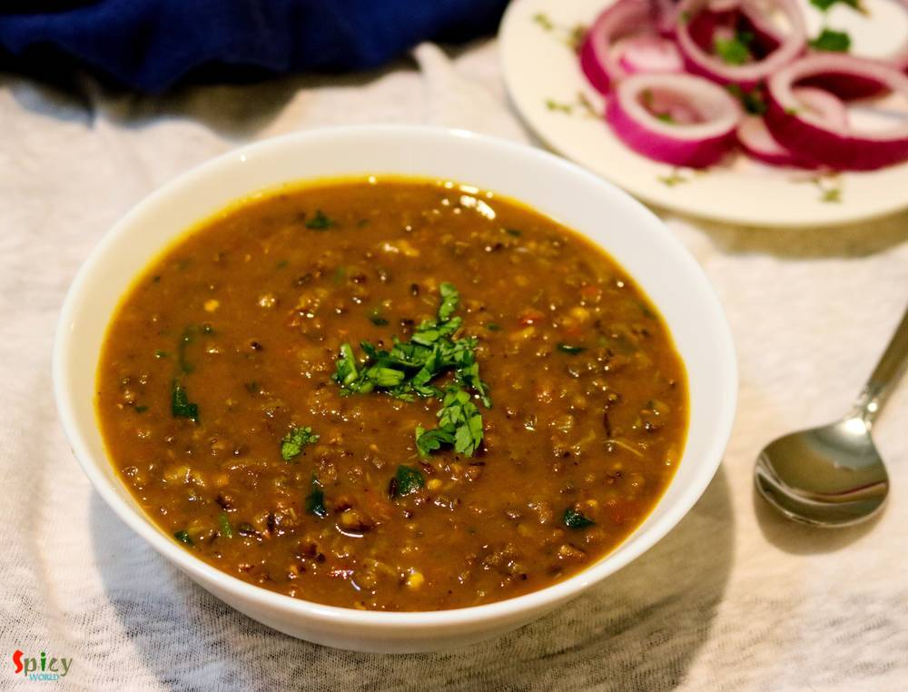
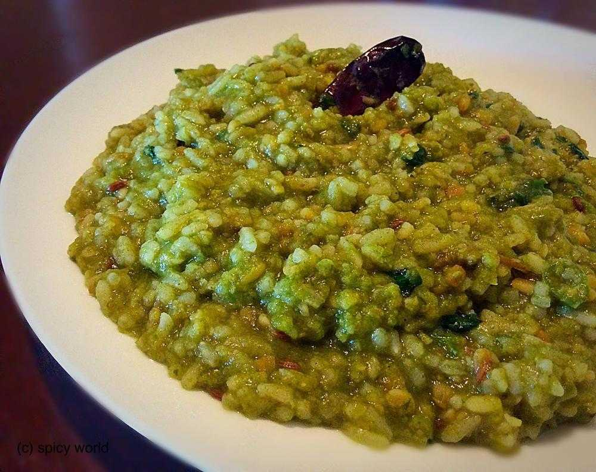

Simple and Easy Recipes
Posts on 'tempering'
Aug 25, 2016
We all love to eat food from Dhaba (road side food joint) while traveling. Nowadays you can find many fake dhabas and taste of their food is also fake, nowhere close to the authentic ones. Luckily few old and original dhabas in India still sells the best meals. After tasting those foods, you will probably think that their cooks must have some kind of magical hands. I once tasted their 'mutton curr ...

Aug 20, 2018
I fell in love with 'daal fry' when I first tasted it at a restaurant. A big bowl of daal fry with fresh aroma of coriander leaves and few slices of naan .. very simple equation to make me happy. Yes, you read it right .. no need of non veg stuff with this kind of blissful meal. In India, I never had daal fry at home, always in restaurant. But time flies so quickly. Now I can make it by myself. I ...

Veg Recipe
Jul 21, 2016
How many of you guys clean your kitchen pantry often ? Well, I do it once / twice in a year .... very common for a super lazy person ! Last week I found half bag of whole moong daal in my pantry which was sitting behind a pack of pasta without whispering a word. Then I thought why not make a very simple daal like comfort food. Didn't get time to soak the lentils in water, that's why I used pressur ...
Jun 24, 2016
Panchmel Daal is a very healthy and traditional Rajasthani dish, which you can make with five types of lentil - yellow moong, urad, masoor, toor, whole moong / chana daal. This daal is also known as 'panchkuti daal'. This dish is fully packed with protien and nutrition, also it requires very less oil. You can enjoy this delicious, thick consistancy daal with plain roti, bati or rice. Not only the ...

Veg Recipe
Oct 1, 2015
When you are in a mood of healthy eating, just give it a try ... You will find peace during eating this khichdi because it has some mild flavours and healthy ingredients. This is a meal which you can not ignore.